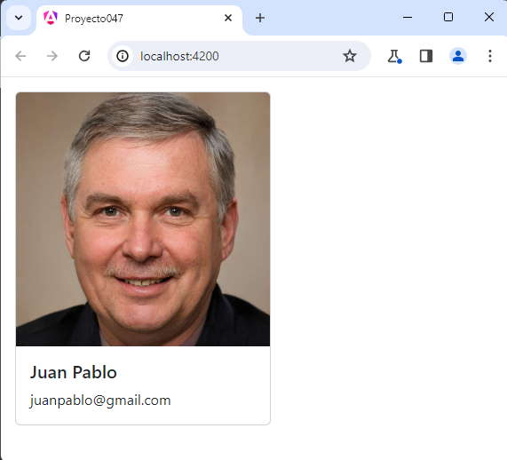

Vamos a desarrollar una última componente haciendo uso del framework de Bootstrap original, para ver como integrarlo a Angular. Con esto podemos luego crear componentes visuales similares a las que propone Bootstrap pero con las funcionalidades de Angular.
Crear una componente llamada TarjetaComponent y cuyo selector debe llamarse 'boot-tarjeta'.
Definir una interface llamada 'Tarjeta' que tenga como atributos la url de una imagen, el nombre de la persona y su mail.
Crearemos primero el proyecto
ng new proyecto047
Instalamos el Bootstrap original con alguna de las tres formas vistas en conceptos anteriores, mediante CDN o localizandolo en la capeta 'public' o mediante npm.
Crearemos la interface tarjeta:
ng generate interface tarjeta
Y luego la codificamos:
export interface Tarjeta {
nombre: string,
mail: string,
foto: string
}
Crearemos la componente 'tarjeta' e indicamos como prefijo para la nueva etiqueta la cadena 'boot' (la idea es recordarnos que esta componente utiliza la librería de Bootstrap):
ng generate component tarjeta --prefix boot
Modificamos el archivo 'tarjeta.component.ts':
import { Component, Input } from '@angular/core';
import { Tarjeta } from '../tarjeta';
@Component({
selector: 'boot-tarjeta',
imports: [],
templateUrl: './tarjeta.component.html',
styleUrl: './tarjeta.component.css'
})
export class TarjetaComponent {
@Input() datos: Tarjeta = { nombre: '', mail: '', foto: '' };
}
Modificamos el archivo 'tarjeta.component.html':
<div class="card" style="width: 18rem;margin:1rem">
<img src="{{datos.foto}}" class="card-img-top" alt="...">
<div class="card-body">
<h5 class="card-title">{{datos.nombre}}</h5>
<p class="card-text">
{{datos.mail}}
</p>
</div>
</div>
Ahora nos queda consumir la componente 'boot-tarjeta', esto lo haremos desde la componente principal de nuestra aplicación Angular.
Modificamos el archivo 'app.component.ts':
import { Component } from '@angular/core';
import { RouterOutlet } from '@angular/router';
import { TarjetaComponent } from './tarjeta/tarjeta.component';
import { Tarjeta } from './tarjeta';
@Component({
selector: 'app-root',
imports: [RouterOutlet, TarjetaComponent],
templateUrl: './app.component.html',
styleUrls: ['./app.component.css']
})
export class AppComponent {
tarjeta:Tarjeta={nombre:'Juan Pablo',mail:'juanpablo@gmail.com',foto:'https://www.ejerciciostutorialesya.com/angular/fotos/persona1.jpg'};
}
Modificamos el archivo 'app.component.html':
<boot-tarjeta [datos]="tarjeta"></boot-tarjeta> <router-outlet />
Ahora ejecutemos la aplicación:
ng serve -o
Tenemos como resultado:
Podemos probar esta aplicación en la web aquí.